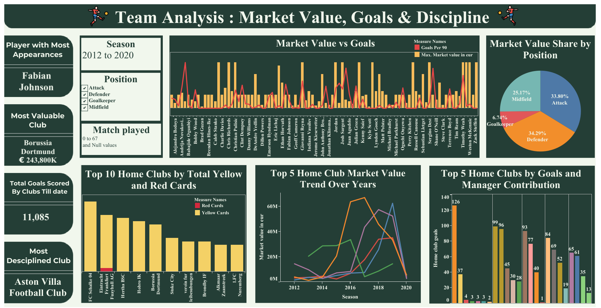
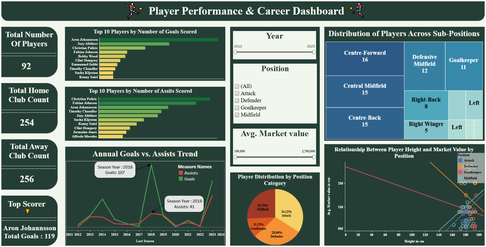
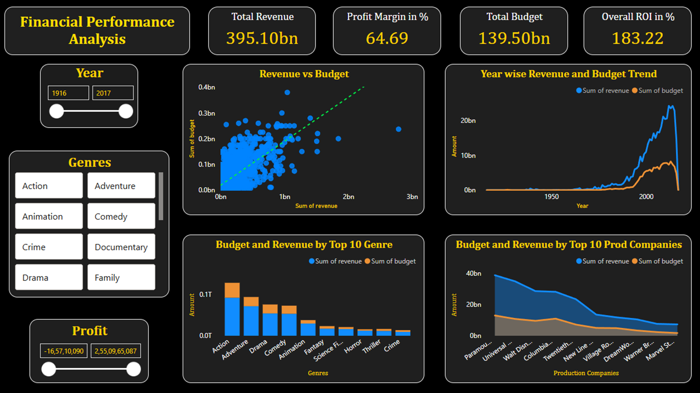
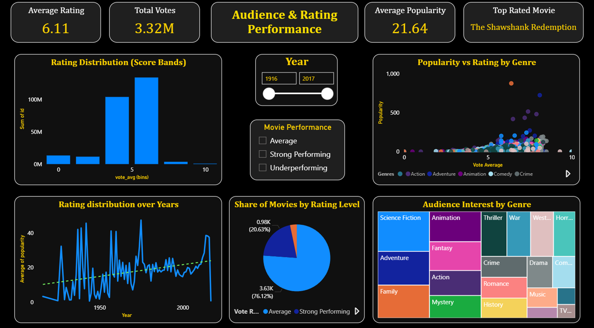

End-to-end analysis of football data involving data cleaning, exploratory data analysis, statistical testing, and machine learning. Built predictive models for player goals, market value, and match attendance (R² ≈ 0.71, accuracy ≈ 72%), and generated actionable insights on player performance, referee impact, and fan engagement using dashboards, clustering, and visual analytics.
Below is a screenshot of the Actionable dashboard
  Link to the projectAnalyzed movie industry data using data cleaning, EDA, statistics, and machine learning to understand revenue trends, audience behavior, and ratings. Developed predictive models for revenue and performance (R² ≈ 0.71, accuracy ≈ 75%) and delivered business-focused insights through visualizations, clustering, and comparative analysis to support data-driven decision-making.
  Link to the project